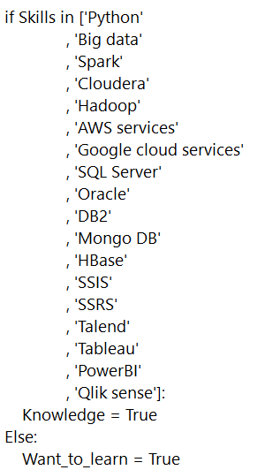

About Me
Curious data engineer for banking / healthcare industry 🥇Developing with python, spark - big data solutions on a data lake.
A curious, enthusiastic professional who gets things done:
- Vast technical & managerial experience in BI, Big data, information systems development, organizations and methods, and business consulting
- Experience working with big data, Python, Spark, Cloudera, Hadoop, AWS services, Google cloud services, SQL Server, Oracle, SSIS, SSRS, Talend, Tableau and PowerBI - producing and analyzing data to optimize performance
- Experienced in Banking, insurance, cellular, healthcare, cables and retail industries
- Strong leadership, good human relations & team work, adoptability & quick learning
- Excellent organizational skills & good performance under pressure
Technical skills:

Homepage